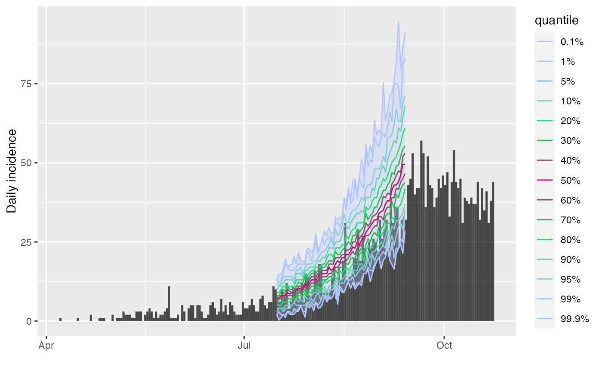

The plot method of projections objects (output by the function
project) shows quantiles of predicted incidence over time. The
function add_projections can be used to add a similar plot to an
existing incidence plot. This latter function is piping friendly (see
examples).
# S3 method for projections
plot(x, ylab = NULL, title = NULL, ...)
add_projections(
p,
x,
quantiles = c(0.01, 0.05, 0.1, 0.5),
ribbon = TRUE,
boxplots = FALSE,
palette = quantile_pal,
quantiles_alpha = 1,
linetype = 1,
linesize = 0.5,
ribbon_quantiles = NULL,
ribbon_color = NULL,
ribbon_alpha = 0.3,
boxplots_color = "#47476b",
boxplots_fill = "grey",
boxplots_alpha = 0.8,
outliers = TRUE
)A projections object.
An optional label for the y-axis. If missing will default to "predicted incidence" or, if cumulative, "predicted cumulative incidence"
An optional title.
Further arguments to be passed to add_projections.
A previous incidence plot to which projections should be added.
A vector of quantiles to plot, automatically completed to be symmetric around the median.
A logical indicating if a ribbon should be drawn; defaults to
TRUE.
A logical indicating if boxplots should be drawn.
A color palette to be used for plotting the quantile lines;
defaults to quantile_pal.
A number used to control the transparency of the quantile lines, from 0 (full transparency) to 1 (full opacity); defaults to 1.
An integer indicating the type of line used for plotting the quantiles; defaults to 1 for a plain line.
An integer indicating the size of line used for plotting the quantiles; defaults to 0.5.
A vector of 2 quantiles to be used to determine the limits of the ribbon; if NULL (default); uses the most extreme quantiles if available; if quantiles are not provided, the daily range will be used.
Any valid color, used for the ribbon.
A number used to control the transparency of the ribbon, from 0 (full transparency) to 1 (full opacity); defaults to 0.3.
Any valid color, used for the boxplot.
Any valid color, used for filling the boxplot.
A number used to control the transparency of the boxplots, from 0 (full transparency) to 1 (full opacity); defaults to 0.8.
A logical indicating if outliers should be displayed
alongside the boxplots; defaults to TRUE.
project to generate projections
if (require(outbreaks) &&
require(distcrete) &&
require(incidence) &&
require(magrittr)) {
si <- distcrete("gamma",
interval = 1L,
shape = 2.4,
scale = 4.7,
w = 0.5)
i <- incidence(ebola_sim$linelist$date_of_onset)
plot(i)
## add projections after the first 100 days, over 60 days
set.seed(1)
proj <- project(x = i[1:100], R = 1.4, si = si, n_days = 60)
## plotting projections: different options
plot(proj)
plot(proj, quantiles = c(.025, .5)) # 95% CI
plot(proj, ribbon_color = "red", quantiles = FALSE) # range
plot(proj, ribbon_color = "red", quantiles = FALSE,
ribbon_quantiles = c(.025, .5))
plot(proj, boxplots = TRUE, quantiles = FALSE, ribbon = FALSE)
plot(proj, boxplots = TRUE, quantiles = FALSE, outliers = FALSE)
plot(proj, linetype = 3)
## adding them to incidence plot
plot(i) %>% add_projections(proj)
plot(i[1:160]) %>% add_projections(proj)
plot(i[1:160]) %>% add_projections(proj, boxplots = FALSE)
plot(i[1:160]) %>%
add_projections(proj, boxplots_alpha = .3, boxplots_color = "red")
## same, with customised quantiles and colors
quantiles <- c(.001, .01, 0.05, .1, .2, .3, .4, .5)
pal <- colorRampPalette(c("#b3c6ff", "#00e64d", "#cc0066"))
plot(i[1:200]) %>%
add_projections(proj, quantiles, palette = pal)
}
#> Loading required package: outbreaks
#> Loading required package: magrittr
#> Scale for x is already present.
#> Adding another scale for x, which will replace the existing scale.
#> Scale for x is already present.
#> Adding another scale for x, which will replace the existing scale.
#> Scale for x is already present.
#> Adding another scale for x, which will replace the existing scale.
#> Scale for x is already present.
#> Adding another scale for x, which will replace the existing scale.
#> Scale for x is already present.
#> Adding another scale for x, which will replace the existing scale.
#> Warning: The `guide` argument in `scale_*()` cannot be `FALSE`. This was deprecated in
#> ggplot2 3.3.4.
#> ℹ Please use "none" instead.
#> ℹ The deprecated feature was likely used in the incidence package.
#> Please report the issue at <https://github.com/reconhub/incidence/issues>.
